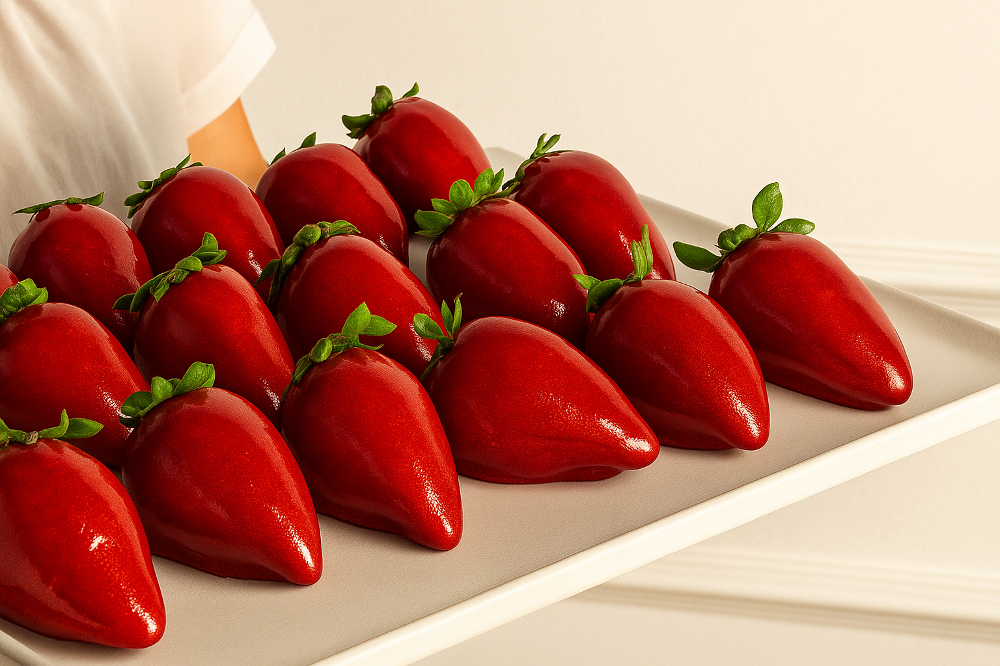

Sobre a Receita
🍓 Morango do Amor: O sabor que conquista corações! 💖
Doce, suculento e irresistível, o Morango do Amor não é apenas uma fruta… é uma experiência. Cada mordida é uma explosão de sabor que desperta emoções e cria momentos inesquecíveis. Ideal para compartilhar, presentear ou simplesmente se entregar ao prazer de algo realmente delicioso.
Ingredientes
- 12 morangos grandes com cabinho
- 2 xícaras de açúcar
- 1/2 xícara de água
- 1 colher (sopa) de vinagre
- Palitos de churrasco
Modo de Preparo
- Lave e seque bem os morangos, mantendo os cabinhos.
- Espete cada morango em um palito de churrasco.
- Em uma panela, misture o açúcar, a água e o vinagre.
- Leve ao fogo sem mexer até obter uma calda em ponto de bala dura (aprox. 150°C).
- Banhe cada morango rapidamente na calda e coloque sobre uma superfície untada para esfriar.